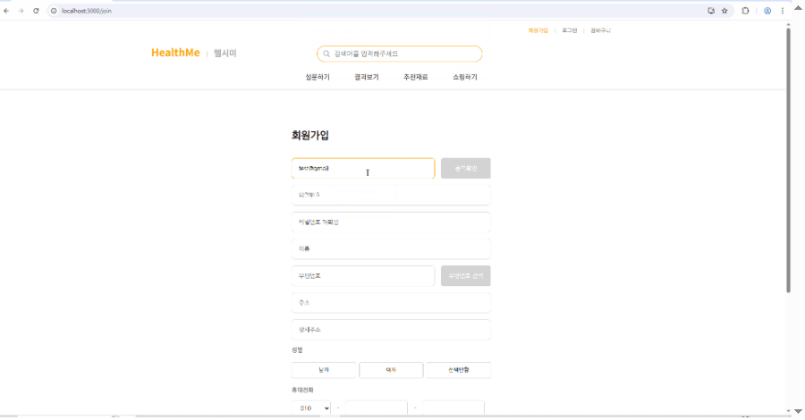

const whoami =
하태형
Backend Developer · Security & Infra
모르는 것은 그날 찾아보고, 만들어서 확인한 사람
$ whoami hth # 하태형 · 백엔드 + 보안·인프라 $ history 1 2020.02 영남대학교 기계공학부 졸업 2 2024.12 정보처리산업기사 취득과정 시작 · Java, Spring, DB 3 2025.04 HealthMe 팀 프로젝트 · 로그인·소셜 로그인·추천 담당 4 2025.06 SQLD 취득 5 2026.03 정보처리기사 필기 합격 6 2026.08 SKT ALEPH K-뉴딜 아카데미 시작 · 네트워크·보안 실습 7 2026.10 리눅스마스터 2급 합격 · 팀 CTF 머신 Overwrite 8 2026.10.25 정보처리기사 실기 응시 $ tree -L 1 ~/aleph-notes # 직접 정리한 실습 노트 37개 aleph-notes ├── network/ 16 OSPF·EIGRP·VLAN·ACL·NAT │ ASA Failover·ZFW·pfSense │ GRE over IPsec·FHRP·IPv6 ├── system/ 13 계정·권한·커널, Bash │ Apache·DNS·NFS·Samba·FTP │ rsyslog·Zabbix·Docker ├── detection/ 3 Snort3·Suricata·Wazuh·OSSEC ├── database/ 3 MariaDB 권한·복제·백업 └── etc/ 2 모의해킹 방식, 리눅스마스터 오답 $ cat projects.txt Overwrite 팀 CTF 머신 · 취약점 5단계 설계, 서버 구성 $ cat certs.txt 리눅스마스터 2급 · SQLD · 정보처리기사 필기 $
Backend Developer · Security & Infra
모르는 것은 그날 찾아보고, 만들어서 확인한 사람
코리아IT아카데미의 (과정평가형) 정보처리산업기사 취득과정(2024.12 – 2025.06)과 SKT ALEPH K-뉴딜 아카데미(2026.08.11 – 11.13)에서 만든 프로젝트입니다. 인증 기능을 맡은 팀 프로젝트 HealthMe, 팀에서 제작 전반을 맡은 CTF 머신, 실험 도구를 직접 만든 논문과 그 규칙으로 만든 앱을 하나로 묶은 사운드 워크를 대표로 앞에 두었습니다. 카드를 누르면 화면과 설명이 문서로 열립니다. AI와 함께 만든 프로젝트의 코드는 AI가 작성했고, 구상과 요구, 선택과 확인은 직접 했습니다.
그 밖에 어제 생성된 GitHub 저장소 수를 매일 기록하는 대시보드 The Day Before를 만들었습니다. 외부 API가 실패하면 가짜 값 대신 지연 상태를 보여 주고, GitHub Actions 자동 기록은 54일 중 52일 이어졌습니다. 배포 사이트 ↗ · GitHub ↗
처음에는 요구사항을 그대로 AI에게 넣는 것으로 시작했고, 이후 요구를 구체적으로 나누고, 설계서와 계획을 먼저 두고, 외부 도구까지 연결하는 방식으로 달라졌습니다. AI가 빠르게 만들어 주는 만큼 무엇을 만들지 정하고, 결과를 직접 써 보고, 맞는 것을 고르는 일이 더 중요하다는 점을 배웠습니다.
자격증, 저장소, 프로젝트, 과정 실습으로 확인할 수 있는 기술만 적었습니다. 타일 모서리의 점은 근거의 종류입니다.
 Java객체지향, 예외 처리, 컬렉션을 사용해 Java로 서버 코드를 작성할 수 있습니다. 근거: HealthMe(Java 21) · GitHub 저장소 JAVA · CodingTest (2025)
Java객체지향, 예외 처리, 컬렉션을 사용해 Java로 서버 코드를 작성할 수 있습니다. 근거: HealthMe(Java 21) · GitHub 저장소 JAVA · CodingTest (2025) Spring BootSpring Boot로 프로젝트 구조를 설계하고 기능을 붙여 웹 서비스를 만들 수 있습니다. 근거: HealthMe(Spring Boot 3.4) · GitHub 저장소 Spring · Springboot (2025)
Spring BootSpring Boot로 프로젝트 구조를 설계하고 기능을 붙여 웹 서비스를 만들 수 있습니다. 근거: HealthMe(Spring Boot 3.4) · GitHub 저장소 Spring · Springboot (2025) JWT · OAuth2JWT(Access·Refresh)를 발급해 HttpOnly 쿠키에 담고, 카카오·네이버·구글 소셜 로그인을 하나의 흐름으로 통합할 수 있습니다. 근거: HealthMe
JWT · OAuth2JWT(Access·Refresh)를 발급해 HttpOnly 쿠키에 담고, 카카오·네이버·구글 소셜 로그인을 하나의 흐름으로 통합할 수 있습니다. 근거: HealthMe MariaDB계정과 권한을 관리하고, Master-Slave 복제를 구성하고, mysqldump로 백업할 수 있습니다. 근거: Aleph 과정 실습
MariaDB계정과 권한을 관리하고, Master-Slave 복제를 구성하고, mysqldump로 백업할 수 있습니다. 근거: Aleph 과정 실습 Linux계정·권한(passwd/shadow, 특수 권한)을 관리하고, 커널·리소스(sysctl, /proc)를 확인해 설정할 수 있습니다. 근거: 리눅스마스터 2급 합격 (2026.10.02 발표) · Aleph 과정 실습
Linux계정·권한(passwd/shadow, 특수 권한)을 관리하고, 커널·리소스(sysctl, /proc)를 확인해 설정할 수 있습니다. 근거: 리눅스마스터 2급 합격 (2026.10.02 발표) · Aleph 과정 실습 Ubuntu ServerUbuntu Server에 서비스를 설치하고 구성할 수 있습니다. 근거: 팀 CTF 머신 Overwrite의 서버 구성 · Aleph 과정 실습 서버
Ubuntu ServerUbuntu Server에 서비스를 설치하고 구성할 수 있습니다. 근거: 팀 CTF 머신 Overwrite의 서버 구성 · Aleph 과정 실습 서버 Rocky LinuxRocky Linux 서버에 Suricata, MariaDB 복제 같은 서비스를 구성할 수 있습니다. 근거: Aleph 과정 실습 서버
Rocky LinuxRocky Linux 서버에 Suricata, MariaDB 복제 같은 서비스를 구성할 수 있습니다. 근거: Aleph 과정 실습 서버 Docker (기초)Docker를 설치하고 이미지와 컨테이너를 기본 조작할 수 있습니다. 기초 수준입니다. 근거: Aleph 과정 실습
Docker (기초)Docker를 설치하고 이미지와 컨테이너를 기본 조작할 수 있습니다. 기초 수준입니다. 근거: Aleph 과정 실습지원 직무와 관련된 자격증만 최신순으로 적었습니다.
교육과 학력을 최신순으로 적었습니다. 과정마다 배운 내용과 그 과정에서 만든 프로젝트를 함께 두었습니다.
코리아IT아카데미 · 2026.08.11 – 11.13 · 수강 중
코리아IT아카데미 · 수료
졸업
전체 배치를 다시 설계했습니다. 픽셀 테마는 부분 수정 대신 기초부터 다시 만들고, 작업 원칙 · 구조 · 검증 기준을 문서로 정리했습니다.

코르크보드와 픽셀에 이어 Win95 테마까지 구현했지만, 기능을 고칠 때마다 무료 이미지의 저작권을 확인하는 일이 작업량을 크게 늘렸습니다.
팀원들에게 보였을 때 칭찬은 들었지만 관심이 다른 테마에 몰려서, 구현 사흘 만에 모든 페이지에서 제거했습니다. 달성 이벤트 디자인은 여러 안을 나란히 만들어 비교한 뒤 정했고, 핀 모드는 복잡하게 만들었다가 줄이고 다시 조정했습니다.
로그인 뒤 다른 사람의 자료가 열리지 않는 것을 확인한 기록과, 막지 못한 것(무차별 대입 방어 등)의 목록을 제출 문서에 남겼습니다.
사용자 설문으로 영양 성향을 분석하고, 그 결과에 맞는 식품을 추천해 장바구니와 결제까지 이어지는 쇼핑몰입니다.

패키지 구조와 인증 흐름은 직접 설계했고, 코드는 수업 실습에서 작성한 코드를 가져와 이 구조에 맞게 붙여 완성했습니다.
팀 전체 커밋 330개 가운데 77개가 제 커밋입니다.
수술기록이 사건 다음 날 아침에 고쳐 쓰였다는 제보에서 시작하는 웹게임형 CTF 머신입니다. 참가자는 의료분쟁 조사관이 되어 병원의 외부 시스템에서 내부망 서버까지 들어가고, 덮어쓰기 전의 원본 기록을 찾아냅니다.
팀원 4명이 만든 CTF 머신입니다. 스토리와 공격 기법의 방향을 정하고, 서버 구성과 문서화, 최종 수정까지 제작 전반을 맡았습니다.
2026년 봄, 한 소녀가 수술실에서 돌아오지 못했습니다.
KLOAD대학교병원에서 담낭 절제술을 받은 24세 환자 김하린이 숨졌고, 유족에게 전달된 수술기록에는 “특이사항 없음”이라고 적혀 있었습니다. 그런데 사건 다음 날 아침, 익명의 제보가 들어옵니다. 그 기록은 고쳐 쓴 것이라는 제보였습니다.
플레이어는 전직 간호사 출신 의료분쟁 조사관 윤서정이 되어 사건을 맡습니다. 그의 신조는 “기록은 거짓말을 안 한다”입니다. 그러나 이 사건에서 기록은 언제든 다시 쓸 수 있는 것이었습니다.
단서를 쥔 사람은 집도의였던 외과 교수와, 침묵과 양심 사이에서 갈등하는 전공의이자 제보자입니다. 조사관은 먼저 두 서류에서 서로 맞지 않는 줄을 찾아내는 것부터 시작합니다.
사건과 인물, 기관, 계정, 전화번호는 모두 가상입니다.
| 분류 | Web / Network / Privilege Escalation (포렌식 요소 포함) |
|---|---|
| 풀이 시간 | 팀원 전원이 직접 풀어 보고 평균 약 2~3시간을 확인했습니다. 풀이 방향을 이미 알고 푼 시간이므로, 처음 푸는 사람의 시간을 더해 3~5시간으로 잡았습니다. |
| 실행 환경 | VirtualBox 7.x, Ubuntu Server 22.04, 메모리 2048MB, 브리지 네트워크 |
| 규칙 | 네트워크를 통한 공격만 허용하고, 서비스 거부(DoS) 공격은 금지합니다. |
머신은 두 부분으로 이루어집니다. 수사 과정을 안내하는 웹게임 화면과, 공격 대상이 되는 병원 홈페이지·직원용 게시판입니다. 화면을 누르면 크게 볼 수 있습니다.
플레이하는 순서대로 놓았습니다.
참가자가 실제로 공략하는 가상 병원 사이트와 직원용 게시판입니다.
참신한 기법으로 만들고, 풀이를 알고 나면 “그래서 그랬구나” 하고 납득되는 명쾌한 풀이를 목표로 설계했습니다.
기법을 먼저 정했고, 그 기법이 쓰일 수 있도록 스토리를 맞추었습니다. 스토리는 CTF라는 주제를 해치지 않는 선에서 참신한 쪽으로 골라, 수사 과정을 따라가는 웹게임 형식을 택했습니다.
주제만 주어진 상태에서 시작해, 위의 기준에 맞추어 설계를 여러 번 바꾸었습니다.
수많은 시행착오가 있었고, 그중 방향이 바뀌었거나 서로 다른 요구를 조정한 대표적인 사례만 적었습니다.
| 처음 구상 | 최종 | |
|---|---|---|
| 기법 구성 | 떠오르는 기법 여러 개 | 포트 노킹을 중심으로, 공통으로 나온 기법만 남김 |
| 중복 기법 | 병원 구간과 서버 구간에 모두 스테가노그래피 | 중복을 없애고 빈 자리에 새 기법을 배치 |
| 포트 노킹 힌트 | 병원 페이지에서 세 힌트를 모두 수상하다고 직접 설명 | 유심히 살펴봐야 알 수 있도록 CTF답게 숨겨서 배치 |
| 파일 업로드 | 지정한 업로드 경로를 거쳐야 실행되도록 설계 | 게시물에 올라간 첨부파일을 눌러도 실행되도록 수정 |
| 계정 시작점 | guest 계정부터 숨겨서, guest를 찾고 다시 member 계정을 찾아야 함 | guest 계정으로 시작해 member 계정을 찾도록 변경 |
| 포트 노킹 순서 | 무작위로 하자는 의견과, 순서를 알려 주자는 의견 | 순서를 정해서 알려 주는 쪽으로 확정 |
CTF 설계 기법과 풀이 흐름에 관한 판단
Decision 01
처음에는 포트 노킹을 중심으로 은행을 터는 도둑 이야기를 구상했습니다. 여러 기법이 모이면서 이 컨셉으로는 묶을 수 없게 되어, 포트 노킹과 공통으로 나온 스테가노그래피, 리버스 셸만 남기고 의료사고 추리 이야기로 바꾸었습니다.
이유 풀이가 길어지고 난이도를 통제할 수 없었기 때문입니다.
Decision 02
병원 구간과 서버 구간의 힌트를 나누어 설계하다가 스테가노그래피가 중복된 것을 발견해 고치고, 빈 자리에 새 기법을 배치했습니다. 전공의 인증 페이지도 삭제했습니다.
이유 두 구간이 서로 다른 경험이어야 풀이가 단조롭지 않습니다. 전공의 인증 페이지는 리버스 셸로 오해할 수 있고 풀이도 길어졌습니다.
Decision 03
병원 구간에서 포트 노킹으로 이어지는 세 힌트를 처음에는 모두 수상하다고 직접 설명했습니다. 유심히 살펴봐야 알 수 있도록 CTF답게 숨겨서 배치했습니다.
이유 직접 살펴보고 찾아내는 풀이로 만들기 위해서입니다.
Decision 04
리버스 셸이 실행되는 파일 업로드를 처음에는 지정한 업로드 경로를 거쳐야 하도록 설계했습니다. 만들다 보니 게시물이 그대로 올라가는 구조가 되어서, 올라간 게시물의 첨부파일을 눌러도 실행되도록 수정했습니다.
플레이 경험 찾는 재미는 남기고, 막히는 불쾌함은 줄였습니다
Decision 05
처음에는 guest 계정도 숨겨서, guest 계정을 찾은 뒤 다시 member 계정을 찾아야 했습니다. guest 계정으로 시작해서 member 계정을 찾도록 바꾸었습니다.
이유 플레이하는 사람이 느끼는 불쾌감을 줄이기 위해서입니다.
Decision 06
포트 노킹의 순서를 무작위로 할지, 정해서 알려 줄지 정해야 했습니다. 무작위로 하자는 의견도 있었지만 논의 끝에 순서를 알려 주는 쪽으로 확정했습니다.
이유 불쾌한 경험을 줄이고, 풀이를 알고 나면 직관적이고 명쾌하게 설명되도록 하기 위해서입니다.
스토리와 게임 이야기의 개연성과 웹게임 형식에 관한 판단
Decision 07
이야기에서는 비밀이 자유게시판에 있어야 했는데 손님 계정도 자유게시판에 들어갈 수 있어야 했습니다. CTF 풀이에는 이상이 없었지만 개연성이 맞지 않아서, 비밀글 대신 비밀 게시판인 대나무숲을 추가했습니다.
Decision 08
난이도를 맞추려고 힌트를 남기는 방식을 더 직관적이고 쉽게 바꿨더니 스토리의 개연성이 맞지 않아서 스토리를 함께 고쳤습니다. 기법과 힌트를 확정한 뒤에는 웹게임 요소를 살리면서 이야기 흐름과 문서를 다시 검토했습니다.
| 난이도 | 기법이 많고 내용이 쉽지 않아서 Hard로 정했습니다. |
|---|---|
| AI 활용 | AI에게 제안을 여러 개 받아 하나를 고르고, 큰 틀만 반영한 뒤 세부 안을 다시 받아 고쳤습니다. 선택은 직접 했습니다. |
서로 다른 취약점 다섯 단계가 한 줄로 이어지도록 설계했습니다. 한 단계에서 얻은 결과가 다음 단계로 들어가는 단서가 됩니다. 구간마다 중심이 되는 기법이 다릅니다.
풀이의 큰 흐름만 간추렸습니다. 직접 풀어 볼 계획이 있다면 열지 마십시오.
머신을 만든 뒤 의도하지 않은 방법으로 풀리지 않는지 확인했습니다. 지금까지 배운 기법과 직접 풀어 본 CTF의 기법을 먼저 적용하고, 널리 알려진 방법도 함께 살폈습니다. 직접 점검한 뒤 팀원 전원에게도 같은 점검을 요청했습니다.
이 머신에 등장하는 모든 병원, 인물, 계정, 전화번호는 가상이며 실존하는 기관이나 개인과 무관합니다.
논문에서 쓴 내용을 기반으로, 실제 서울·대구 지형과 비슷하게 만든 3D 거리에서 직접 체험해 볼 수 있게 만든 게임형 앱입니다. 소리를 단서로 길을 찾고, 소리가 있을 때와 없을 때의 기록을 논문의 비율 방식으로 비교해 보여 줍니다.
논문과 앱은 하나의 프로젝트입니다. 논문이 가설과 소리 랜드마크 규칙을 정했고, 앱은 그 규칙을 실제 지형 위에서 누구나 체험하게 합니다. 바탕이 된 논문은 아래 바탕 논문에서 볼 수 있습니다.
┌─────┬──────┐ │ ♪ │ ▶ │ ├──┐ └──┐ │ │ │ ● │ ♪ │ └──┴─────┴────┘
정식 제목은 「미로형 3D 공간에서 고정 청각 랜드마크의 개수가 길찾기에 미치는 영향」(2026.10.01)입니다. 길을 잘 못 찾는 사람이 시각 정보가 제한된 3D 공간에서 소리를 단서로 쓸 수 있는지 궁금해서 시작했습니다. 서로 다른 음색의 고정 소리를 0개, 2개, 3개로 바꿔 가며 미로를 찾게 하는 브라우저 3D 시뮬레이터를 직접 만들었고, 지인 5명이 시행했습니다.
3개 조건이 소리 없는 조건보다 빨랐던 참가자는 5명 중 4명이었습니다(시행 순서를 통제한 3명 중에서는 2명). 표본이 5명이라 가설의 지지와 기각은 판단하지 않았고, 결과는 탐색적 경향으로만 읽었습니다.
논문 전문입니다. 본문에 나오는 sim/, analysis/, docs/ 경로는 aleph_thesis 저장소에 있습니다.
길을 잘 못 찾는 사람이 시각 정보가 제한된 3D 공간에서 소리를 단서로 쓸 수 있는지가 궁금했다. 이를 확인하려고 서로 다른 음색의 고정 청각 랜드마크를 0개, 2개, 3개로 바꿔 가며 미로를 찾게 하는 브라우저 기반 3D 시뮬레이터를 직접 만들었다. 지인 5명이 시행마다 소리 개수가 다른 미로 3개를 풀었고, 소요 시간·경로 효율성·막다른 길 진입 횟수·재정향 시간을 자동으로 기록했다. 방향감각은 4문항 자기보고 척도(R-SOD)로 쟀다. 설계 버전이 서로 다른 참가자가 섞여 있어, 시간 절댓값을 합치지 않고 같은 사람의 소리 없는 시행 대비 비율로 비교했다. 3개 조건이 소리 없는 조건보다 빨랐던 참가자는 5명 중 4명이었지만(시행 순서를 통제한 3명 중에서는 2명), 2개 조건은 2명만 빨랐다. 방향감각 점수가 낮은 세 명은 모두 3개 조건에서 빨랐으나, 가장 높은 점수의 참가자도 빨라져 점수와 효과의 관계는 말할 수 없었다. 음량 컷오프 때문에 3개 조건도 경로 후반에는 사실상 소리 2개만 들려, 선행연구의 "서로 다른 소리 3개일 때 위치 애매함이 풀린다"를 재검증하지 못했다. 표본이 5명이라 가설의 지지와 기각은 판단할 수 없고, 결과는 탐색적 경향으로만 읽어야 한다.
길을 잘 못 찾는 사람(이하 "길치")은 지도가 불친절한 3D 게임에서 특히 어려움을 겪는다. 필자 본인이 이 집단에 속해 있어, 길찾기를 돕는 단서를 무엇으로 줄 수 있는지에 관심을 가졌다. 지도 유무나 장기 훈련 효과는 기존 연구가 많거나 1주일 안에 확인하기 어려워 접었고, 소리를 단서로 쓰는 방향으로 좁혔다.
방향감각은 Santa Barbara Sense of Direction Scale(SBSOD)로 측정할 수 있고(Hegarty et al., 2002), 이를 4문항으로 줄인 R-SOD도 원 척도와 비슷한 신뢰도(Cronbach's α = 0.90)를 보인다(Jaswal et al., 2025).
청각 정보가 가상환경에서 공간 탐색을 돕는다는 근거는 여러 편 있다. 목적지를 가리키는 청각 신호가 공간 업데이트 오차를 줄이고 원래 수행이 나빴던 사람일수록 개선폭이 컸고(Shayman et al., 2024a), 청각 단서가 가상환경 길찾기의 속도와 정확도를 높일 수 있다는 소규모(4명) 파일럿 보고도 있다(Burkins & Kopper, 2015). 다만 시야가 나빠져도 사람들은 청각보다 시각 단서에 더 의존한다는 결과도 있다(Shayman et al., 2024b).
본 연구와 가장 가까운 선행연구는 Jetzschke et al.(2017)이다. 이 연구는 서로 다른 소리(unique) 3개가 있어야 위치 애매함이 완전히 풀리고, 같은 소리(uniform)는 몇 개를 줘도 풀리지 않는다는 것을 인간 실험(N = 25)으로 보였다. 그러나 3개가 아니라 2개일 때 애매함이 얼마나 남는지는 다루지 않았고, 정지한 상태의 위치 추정이 아니라 직접 걸어서 목적지를 찾는 능동적 탐색 과제와 방향감각 점수가 효과를 조절하는지도 다루지 않았다.
3D 공간 탐색에서, 서로 다른 음색을 가진 고정 청각 랜드마크의 개수(0개/2개/3개)는 길찾기 소요 시간과 경로 효율성에 영향을 주며, 이 효과는 평소 방향감각이 낮은(길치인) 사람일수록 더 크게 나타난다.
처음에는 목적지에서 소리가 나는 비콘형 신호를 구상했으나, 정답을 직접 알려주면 결과가 한쪽으로 정해지므로 위 가설처럼 목적지 방향은 알려주지 않고 참가자가 고정된 소리 여러 개를 종합해 스스로 위치를 추론하는 방식으로 바꿨다.
가설이 틀렸을 때의 해석도 미리 정했다. 소리 개수와 무관하게 시간이 같다면 청각 랜드마크가 길찾기에 실질적 도움이 되지 않는다는 뜻이고, 2개와 3개가 같다면 선행연구의 "3개 필요"가 이 과제에서는 재현되지 않는다는 뜻이다.
브라우저에서 실행되는 3D 미로 시뮬레이터를 직접 만들었다(HTML/CSS/JS, Three.js, Web Audio API; sim/). 이동은 WASD와 마우스 시점 조작이다. 시각 단서가 생기지 않도록 벽·바닥·천장은 무늬 없는 단색이고 안개로 약 2칸 앞까지만 보인다. 목적지 칸에 맞닿은 벽은 가까워지면 금색으로 바뀌어 도착을 알 수 있다.
미로. randomized Prim's algorithm으로 만든 10×10칸(21×21 격자) 완전 미로(루프 없는 트리 구조)이며, 시드를 고정해 항상 같은 구조가 나온다. 시작과 목적지는 대각선 반대편 모서리이고 최단경로는 41칸이다. 나머지 두 맵은 이 미로를 회전·반전한 것이라 경로 길이와 분기 수가 같다(He et al., 2024; 미로 난이도를 크기·경로 길이·막다른 길 수로 통제하는 원리는 Tomás-Zapico et al., 2022). 랜드마크 좌표도 같은 변환을 받는다.
청각 랜드마크. 서로 다른 주파수대의 음색 세 개를 Web Audio의 HRTF 3D 패너로 배치했다(Jetzschke et al., 2017의 "서로 다른 음색" 조건). 0번은 나무 타격음(저음), 1번은 물방울(중음), 2번은 바람 소리(고음)다. 세 소리는 모두 짧게 울리고 끊기며(1.2/1.8/2.5초 간격), 목적지 방향을 가리키지 않는다. 0·1번은 시작 모서리의 양옆 모서리에, 2번은 시작 모서리에서 대각선 바깥으로 8칸 떨어진 미로 밖에 있고, 목적지 모서리에는 소리가 없다. 2번을 미로 밖에 둔 것은 음량 변화가 진행 정도를 알려주는 계기판이 되지 않도록 하기 위해서다. 음량은 거리에 따라 선형으로 줄어 90유닛 밖에서는 완전히 무음이 된다. 참가자가 가까이 가면 떨림(트레몰로)이 커져 근접을 알 수 있다.
독립변수는 랜드마크 개수(0/2/3개)이고, 참가자는 세 조건을 한 번씩, 서로 다른 맵에서 경험했다(본시행 3회, 앞서 워밍업과 소리 미리 듣기 연습이 있고 이는 기록하지 않았다). 시행 순서와 맵 배정은 라틴방진 표 6줄(ASSIGNMENT_TABLE)로 순환시켜 순서 효과를 상쇄하려 했다. 2개 조건에서 어느 소리를 뺄지도 슬롯별로 순환시켰다. 제한시간은 시행당 최종 설계 기준 435초다.
참가자는 지인 5명(P1~P5)이다. 실험을 직접 해 보며 피드백을 반영해 설계를 여러 번 바꿨기 때문에 설계 버전이 둘이다. P1~P3(2026-09-16)은 15×15 미로, 제한시간 260초, 목적지 방향 안내가 있는 초기 버전이고, P4~P5(2026-10-01)는 위 2.1의 최종 설계다. 연구자가 동작 확인용으로 만든 기록 1건은 제외했다. 변경 내역은 docs/03 §10에 있다.
표본이 5명이고, 사전 검정력 시뮬레이션(docs/03 §6)에서 6명으로도 검정력이 약 12%라는 결과가 나와, 유의성 검정은 하지 않았다. 대신 참가자 안에서 소리가 있는 시행을 자기 0개 시행과 비교한 비율(1보다 작으면 소리가 있을 때 더 좋음)을 구하고, 몇 명 중 몇 명이 예상한 방향이었는지를 보고한다. 설계 버전이 다른 사람의 시간 절댓값은 평균내지 않는다. 제한시간을 넘긴 시행은 값이 잘려 있으므로 표시한다. 분석 지표와 방법은 데이터를 보기 전에 정했고(docs/04 §1), 시행 순서를 통제한 부분 분석은 결과를 본 뒤 추가한 사후 탐색이다.
표의 시간비는 해당 조건의 소요 시간을 자기 0개 시행의 소요 시간으로 나눈 값, 효율비는 경로 효율성의 같은 비율이다. 1보다 작을수록 그 조건에서 더 좋았다. T는 제한시간 초과를 뜻하며 실제 값은 더 크다.
| 참가자 | 설계 | R-SOD | 시행 순서(소리 개수) | 0개 시간(초) | 2개 시간비 | 2개 효율비 | 3개 시간비 | 3개 효율비 |
|---|---|---|---|---|---|---|---|---|
| P1 | v1 | 16 | 2→3→0 | 29 | 2.11 | 1.86 | 2.75 | 2.38 |
| P2 | v1 | 23 | 0→2→3 | 81 | 0.75 | 0.74 | 0.66 | 0.66 |
| P3 | v1 | 4 | 2→3→0 | 173 | 1.50 (T) | 1.20 | 0.36 | 0.26 |
| P4 | v4 | 8 | 0→2→3 | 346 | 1.26 (T) | 1.39 | 0.44 | 0.48 |
| P5 | v4 | 4 | 3→0→2 | 236 | 0.76 | 0.78 | 0.80 | 0.77 |
0개보다 빨랐던 참가자는 3개 조건에서 4/5명, 2개 조건에서 2/5명이다. 3개 조건의 효율비도 같은 방향이다(4/5명). 2개와 3개를 직접 비교하면 P1·P2·P5는 비슷했고, P3·P4는 3개 조건이 훨씬 빨랐다.
막다른 길 진입 횟수는 3개 조건에서 0개보다 줄어든 참가자가 4/5명(P2~P5), 2개 조건에서는 1/5명(P5)이었다. 재정향 시간은 3개 조건에서 줄어든 참가자가 3/5명(P2, P3, P4), 2개 조건에서는 1/5명(P5)이었다. 재정향 시간은 참가자 간 편차가 매우 커서(0개 기준 0.47~27.58초) 방향 정도만 참고한다. 표 전체는 docs/04 §3.2에 있다.
소리 조건과 무관하게 1·2·3번째 시행을 비교하면, 5명 모두 3번째 시행이 1번째보다 빨랐다(3번째/1번째 0.44~0.95, 중앙값 0.66). 2번째 시행은 1번째보다 느린 참가자가 3명이었다. 뒤로 갈수록 빨라지는 경향, 즉 미로에 익숙해지는 효과가 보인다.
이 효과와 소리의 효과를 가르기 위해, 3개 시행이 0개 시행보다 먼저 있었던 참가자만 보면 3명이다. 이 중 P3·P5는 3개 조건이 더 빨랐고 P1은 더 느렸다(2/3명). 나머지 두 명(P2, P4)은 0개가 먼저라 3개 조건의 개선에 순서 효과가 섞여 있을 수 있다. 따라서 "5명 중 4명"은 순서를 통제하면 더 약한 근거가 된다.
3개 조건의 시간비를 R-SOD 점수 순으로 놓으면 다음과 같다.
| R-SOD | 참가자 | 설계 | 3개 시간비 |
|---|---|---|---|
| 4 | P3 | v1 | 0.36 |
| 4 | P5 | v4 | 0.80 |
| 8 | P4 | v4 | 0.44 |
| 16 | P1 | v1 | 2.75 |
| 23 | P2 | v1 | 0.66 |
점수가 낮은 세 명(4, 4, 8점)은 모두 3개 조건에서 0개보다 빨랐다. 그러나 가장 높은 23점인 참가자도 빨라졌고 16점 참가자는 느려졌다. 점이 5개이고 설계 버전도 섞여 있어, 점수와 효과 크기의 관계는 말할 수 없다.
가설대로 3개 조건이 자기 0개 시행보다 빨랐던 참가자가 5명 중 4명이었고, 효율·막다른 길 진입도 같은 방향이었다. 사전에 정한 틀림 기준(대부분에서 0개가 3개보다 빠르거나 비슷하면 지지되지 않음)에는 해당하지 않는다. 그러나 다음 두 가지는 가설과 다르게 나왔다. (1) 2개 조건은 2/5명만 0개보다 빨랐고 두 명은 제한시간까지 못 끝내, 0>2>3으로 단조 감소하지 않았다. (2) P1은 2개와 3개 모두 0개보다 훨씬 느렸다(0개를 마지막 시행에 29초에 끝냄).
판단 1. 무작위 탐색의 운이 결과를 좌우했을 수 있다. 소리가 없거나 부족해도 갈림길을 우연히 맞게 골라 빨리 도착할 수 있다. 사전 분석에서도 같은 사람 안 시간 차이의 표준편차(57초)가 기대 효과(약 21초)보다 컸다. P1이 0개 조건을 29초에 끝낸 것이 이런 경우일 수 있다. 시행이 15회뿐이라 이런 우연은 소리의 효과와 구분되지 않는다.
판단 2. 순서(연습·익숙함) 효과가 남아 있다. 순서를 표로 상쇄하려 했지만 무작위 배정이 아니고, 5명이 슬롯 1·3·4만 채워 상쇄가 불완전하다. 5명 모두 3번째 시행이 1번째보다 빨랐다. 세 맵이 한 미로를 회전·반전한 것이라 구조에 익숙해졌을 가능성도 있다. 순서를 통제한 3명 중에서는 2명에서만 3개가 빨랐다.
판단 3. 2개와 3개의 소리 환경이 실제로는 거의 같았다. 이 판단은 동료 한 명(익명)의 구두 의견과 필자 본인의 플레이 체감에서 출발했다. 둘 다 공식 인터뷰나 설문으로 기록한 것이 아니라 비공식 관찰이며, 그 내용은 "중앙을 넘어서면 뒤에서 들리던 소리가 사라져, 3개 조건도 어느 정도 진행하면 2개 조건과 비슷해진다"는 것이다. 이를 설정값으로 계산해 확인했다(analysis/audible_count.js, 컷오프 90유닛). 3개 조건에서 최단경로의 처음 약 40%까지는 3개가 모두 들리고 그 뒤 끝까지는 2개만 들린다. 미로 밖 2번 소리가 컷오프 밖으로 사라지기 때문이다. 또 2번 소리를 뺀 2개 조건(슬롯 1, 4: P1, P3, P5)은 3개 조건과 들리는 개수가 같은 칸이 미로 전체의 72%여서 사실상 같은 환경이다. 반면 이 계산은 들린다/안 들린다만 센 것이고, 컷오프 근처에서는 음량이 작아 들려도 약하다. 소리를 얼마나 알아채고 활용했는지는 측정하지 않았다.
5명의 자료에서 3개 조건이 자기 0개 조건보다 빨랐던 참가자는 4명이었고(시행 순서를 통제한 부분집합에서는 2/3명, 사후 탐색), 소리가 길찾기에 도움이 되는 방향의 결과가 나왔다. R-SOD가 낮은 세 명(4, 4, 8점)은 모두 3개 조건에서 빨랐지만, 가장 높은 23점인 참가자도 빨라졌고 16점 참가자는 느려져 점수와 효과의 관계는 말할 수 없다. 반면 2개 조건은 2명만 0개보다 빨랐다. 2개와 3개를 직접 비교하면 3명(P1, P2, P5)은 비슷했고 2명(P3, P4)은 3개가 훨씬 빨랐는데, 두 사람 모두 2개 조건이 3개보다 앞선 시행이어서 순서 효과가 섞였을 수 있다. 선행연구(Jetzschke et al., 2017)는 서로 다른 소리 3개가 있어야 위치 애매함이 완전히 풀린다고 보았는데, 이 미로에서는 음량 컷오프 때문에 경로 후반부터 3개 조건에서도 소리가 2개만 들려(최단경로 기준 약 60% 구간) 이 차이를 재검증하지 못했다. 표본이 5명이라 가설의 지지·기각은 판단할 수 없으며, 컷오프를 없애거나 좌우 구분이 되는 배치로 비교하는 후속 연구가 필요하다. 가설 자체는 수정하지 않았다. 바뀐 것은 실험 설계이지 가설이 아니다.
Burkins, A., & Kopper, R. (2015). Wayfinding by auditory cues in virtual environments. 2015 IEEE Virtual Reality (VR) Conference. https://ieeexplore.ieee.org/document/7223342/
He, R., Correa, C. G., Griffiths, T. L., & Ho, M. K. (2024). Structurally guided task decomposition in spatial navigation tasks. Proceedings of the AAAI Conference on Artificial Intelligence, 38(21). https://arxiv.org/abs/2310.02221
Hegarty, M., Richardson, A. E., Montello, D. R., Lovelace, K., & Subbiah, I. (2002). Development of a self-report measure of environmental spatial ability. Intelligence, 30(5), 425–447. https://www.sciencedirect.com/science/article/abs/pii/S0160289602001162
Jaswal, T., Burles, F., & Iaria, G. (2025). The Rapid Sense of Direction (R-SOD) Scale: A brief self-report tool to identify developmental topographical disorientation (DTD). Brain Sciences, 15(6), 622. https://pmc.ncbi.nlm.nih.gov/articles/PMC12190855/
Jetzschke, S., Ernst, M. O., Froehlich, J., & Boeddeker, N. (2017). Finding home: Landmark ambiguity in human navigation. Frontiers in Behavioral Neuroscience, 11, Article 132. https://pmc.ncbi.nlm.nih.gov/articles/PMC5513971/
Shayman, C. S., Whitaker, M. M., Barhorst-Cates, E. M., Hullar, T., Stefanucci, J. K., & Creem-Regehr, S. H. (2024a). The addition of a spatial auditory cue improves spatial updating in a virtual reality navigation task. Attention, Perception, & Psychophysics. https://pubmed.ncbi.nlm.nih.gov/38724729/
Shayman, C. S., McCracken, M. K., Finney, H. C., Fino, P. C., Stefanucci, J. K., & Creem-Regehr, S. H. (2024b). Integration of auditory and visual cues in spatial navigation under normal and impaired viewing conditions. Journal of Vision. https://pmc.ncbi.nlm.nih.gov/articles/PMC11469273/
Tomás-Zapico, C., Iglesias-Gutiérrez, E., Díaz Martínez, A. E., Butler, R. G., Cuadrado-Peñafiel, V., De la Vega, R., Soto-León, V., Oliviero, A., López-Mascaraque, L., & Trejo, J. L. (2022). A multiple-choice maze-like spatial navigation task for humans implemented in a real-space, multipurpose circular arena. Applied Sciences, 12(19), 9707. https://doi.org/10.3390/app12199707
문헌은 AI가 제시한 목록을 실제 검색으로 실존·저자·연도·내용을 교차 확인했다. 원문 전체를 확인한 것은 Jaswal et al.(2025), Jetzschke et al.(2017), Shayman et al.(2024b), Tomás-Zapico et al.(2022), He et al.(2024)이고, Hegarty et al.(2002), Shayman et al.(2024a), Burkins & Kopper(2015)는 원문이 유료라 초록과 메타데이터만 확인했다.
필요한 것은 Node.js뿐이다. aleph_thesis 저장소의 최상위 폴더에서 실행한다.
node sim/devserver.js를 실행하고 http://localhost:5173을 연다. 로컬에서는 결과가 DB 대신 sim/data/raw/에 파일로 저장된다. 헤드폰으로 들어야 한다. 참가자 순서 배정은 브라우저 localStorage에 의존하므로, 슬롯 1번부터 다시 시작하려면 시크릿 창을 쓴다.node analysis/summarize.js가 analysis/results.csv를 읽어 3장의 표(참가자별 시간비·효율비, 막다른 길 진입·재정향 시간, 시행 순서, R-SOD별 시간비)를 출력하고 analysis/rsod_scatter.svg를 만든다.node analysis/audible_count.js가 sim/config.js와 sim/maps.js를 읽어 칸별로 들리는 소리 개수와 4.2 판단 3의 수치(40% 지점, 72%)를 출력한다.analysis/results.csv가 분석에 쓴 원자료다(참가자 5명, 본시행 15행; 열: participant, design, slot, rsod, trialIndex, map, landmarkLevel, elapsedSec, distance, pathEfficiency, deadEndEntries, reorientationSec, timedOut). 참가자 이름은 실명이라 P1~P5로 바꿨다. 이 파일은 배포된 데이터베이스에서 analysis/export_results.js로 내려받은 것인데, 데이터베이스는 연구자만 접근할 수 있으므로 저장소에서는 이 CSV를 원자료로 본다.docs/01~docs/04에 있다.이 연구는 AI(Claude)와 함께 진행했다. 역할은 다음과 같이 나뉜다.
AI가 한 일
sim/)의 코드 구현과 버그 수정analysis/), 칸별 소리 개수 계산직접 판단한 일
3줄 요약
| 논문 | 앱 |
|---|---|
| 서로 다른 음색의 고정 소리 3개 | 지역마다 성격이 다른 장소 소리 3개를 실제 위치에 둡니다. |
| 목적지에는 소리를 두지 않음 | 목적지 가까이에는 소리를 두지 않고, 출발점과 목적지 사이에 소리가 하나 이상 있게 고릅니다. |
| 거리에 따라 작아지는 소리, 일정 거리 밖 무음, 가까우면 떨림 | 논문 시뮬레이터의 소리 구조를 그대로 옮겼습니다. |
| 안개로 가까운 곳만 보임 | 실제 거리를 보여 주려고 약 300m까지 보이게 넓혔습니다. |
| 자기 소리 없는 시행 대비 시간비 | 소리 없는 판과 있는 판의 시간비를 구하고, 논문 참가자 5명의 기록과 함께 보여 줍니다. |
앱의 코드는 AI와 함께 작성했습니다. 아래는 앱의 방향과 데이터, 모델을 바꾼 판단입니다. 선택지를 놓고 어느 쪽을 택할지는 직접 정했습니다.
| 판단 | 상황과 선택지 | 내가 내린 판단과 이유 | 앱에 미친 영향 |
|---|---|---|---|
| 1. 연구 도구가 아니라 누구나 즐기는 게임으로 | 논문을 그대로 옮기면 실험 도구가 됩니다. | 길치든 아니든 가볍게 즐기는 게임으로 정했고, 무언가를 증명하지 않기로 했습니다. 논문의 소리 규칙은 지키고, 가까운 곳만 보이는 시야는 지키지 않기로 했습니다. 고음 소리는 귀가 아파서 뺐습니다. | 안개를 30m에서 약 300m로 넓혔고, 소리 규칙과 시간비 비교만 논문과 같게 두었습니다. |
| 2. 가상 미로 대신 실제 동네 지도 | 상자 벽 지도, 실제 건물 모양, Google 실사 3D 지도를 놓고 골랐습니다. | 반월당 시제품을 보고 건물을 실제 모양과 층수로 세우기로 정했습니다. Google 실사 3D는 걷는 높이의 화질과 대구 데이터가 불확실해서 쓰지 않았습니다. | 서울 2곳과 대구 2곳으로 정했습니다(처음 7곳에서 4곳으로 축소). |
| 3. 로드뷰 기준 디테일은 AI가 만들 수 없어서 사람이 판정 | 인도와 건물 모습을 로드뷰에 맞춰 정밀하게 만들려 했습니다. 그러나 카카오는 운영정책으로 이미지 추출·저장과 로드뷰 이미지 분석을 금지합니다(사람이 화면으로 보는 것은 허용). 대안으로 Mapillary를 시도했지만 대구 골목에는 사진이 없었습니다. | 약관을 어기는 자동 수집을 하지 않고, 사람이 로드뷰를 직접 보고 판정하기로 했습니다. 판정할 곳은 지역당 10곳 안으로 줄였습니다. 이후 건물은 실제를 똑같이 따라 하지 않고, 블로그·기사·사진으로 동네 분위기만 파악해 비슷한 모델을 고르는 쪽으로 바꿨습니다. | 인도 유무를 일부 규칙으로 추정하게 되어 한계로 적었습니다. 건물의 목표가 "실제와 같게"에서 "그럴듯하게"로 바뀌었습니다. |
| 4. 3D 모델은 권리가 확실한 것만 직접 선택 | 무료 모델은 많지만 다른 게임에서 빼 온 것, 상표가 있는 것, 실제 사람을 스캔한 것이 섞여 있습니다. | 제작사 CC0, MIT, 직접 만든 것이 확인되는 CC BY만 쓰기로 했습니다. 후보를 직접 고르고 Sketchfab에서 직접 받았고, 상표 로고와 번호판은 덮거나 지웠습니다. | 모델 출처를 앱 첫 화면에 표시했습니다. 다른 게임에서 가져온 한국 차종 7종은 제외했습니다. |
| 5. 실제 구조를 반영해 반월당 지하도 추가 | 지도를 단순하게 두면 반월당 교차로의 남북 모서리 사이가 540~748m로 나옵니다. | 실제로 지하도로 건너는 곳이므로 지하 연결을 넣기로 했습니다. | 지하철 출구 9곳을 경로에 넣어 134~198m로 줄었습니다. |
| 6. 비교 조건을 지키는 설계와 범위 | 신호 대기와 차·행인 소리가 기록에 섞이면 소리의 효과를 비교할 수 없습니다. 기능은 계속 늘어납니다. | 플레이어는 신호와 관계없이 건너게 하고, 차와 행인은 소리를 내지 않게 했습니다. 이번 주 안에 끝내려고 도로는 어느 정도, 건물은 그럴듯하게 두고, 지형 높낮이와 실제 상호는 뺐습니다. | 소리 없는 판과 있는 판이 같은 조건에서 비교됩니다. 4개 지역 모두 경로 생성 10/10 성공. |
직접 플레이하며 찾아낸 문제입니다. 코드 수정은 AI가 했고, 무엇을 문제로 볼지와 고친 뒤의 확인은 직접 했습니다.
| 직접 본 문제 | 내가 내린 판단 | AI가 한 일 | 확인한 결과 |
|---|---|---|---|
| 행인이 조금 걷다가 순간이동하고, 걷는 동작이 끝나면 제자리로 돌아가는 것처럼 보였습니다. | 어색한 움직임은 몰입을 깨는 문제라고 판단해 고치도록 요청했고, 고친 뒤 다시 확인했습니다. | 측정 도구로 원인을 찾았습니다. 길을 갈아탈 때 최대 8m를 바로 이동했고, 걷기 동작에 한 주기마다 1.2~1.6m 나아갔다 돌아오는 이동이 들어 있었습니다. 시작점까지 걸어가게 하고 그 이동분을 뺐습니다. | 순간이동 지역당 147~167회에서 0회, 몸 중심 흔들림 최대 1.5m에서 0.06m |
| 차가 너무 많았고 화면이 느렸습니다. | 차가 너무 많다고 판단해 줄이도록 요청했습니다. | 차량 수를 줄이고(품질별 20·35·45대에서 10·18·25대), 그림자 계산과 해상도를 조절했습니다. | 보통 품질 26fps에서 34fps (내장 GPU) |
| 골목이 비어 보여서 주차된 차를 세우는 쪽으로 방향을 정했습니다. | 직접 걸어 보니 주차된 차가 필요 없다고 판단해 제거하게 했습니다. | 주차된 차와 이에 맞춘 일방통행 골목 규칙을 구현했다가 지웠습니다. | 해당 코드 삭제 |
| 출발지나 목적지 옆에 소리가 붙어 있으면 단서가 되지 않았습니다. | 논문의 규칙(목적지에는 소리를 두지 않음)을 지키도록 배치 규칙을 정했습니다. | 출발지·목적지 60m 안에는 소리를 두지 않고, 목적지 300m 안에 소리 2곳 이상이 서로 다른 방향에 있게 하는 규칙을 구현하고 200판으로 검증했습니다. | 잠실·서문시장은 가장 엄격한 단계에서 100%, 상암·반월당은 한 단계 완화해 100%·98% |
이 밖의 기술 문제(T자 교차로에서 차가 사라지는 문제, 행인 일부가 지도 밖으로 이동하는 문제, 판 도중 84~200ms 멈춤, 공공 건물이 골목을 덮어 길이 끊기는 문제)는 AI가 원인을 찾아 고쳤습니다.
지도 파일에는 이용 조건이 분명한 데이터만 넣었습니다. 여러 출처를 쓰고 서로 맞춰 보면서, 출처마다 믿을 수 있는지 확인했습니다.
| 데이터 | 출처 | 쓰임 | 교차검증과 결과 |
|---|---|---|---|
| 도로, 건물, 녹지, 가로수 | OpenStreetMap (Overpass API) | 길 구조와 기본 건물 | 같은 입력으로 지도를 다시 만들어 4곳이 같은 결과인지 확인했습니다. 끊겨서 지워진 길 비율을 측정했습니다(잠실 2.6%, 상암 2.9%, 반월당 7.3%, 서문시장 3.3%). |
| 건물 모양, 층수, 구조, 사용승인 연도 | 국토교통부 GIS건물통합정보 (브이월드, CC BY) | 건물 모양과 높이, 겉모습 | OSM 건물과 절반 넘게 겹치면 같은 건물로 보고, 모양과 높이는 한 출처에서만 가져옵니다. 층수는 건축물대장, OSM, 추정 순서입니다. 공공 건물 비율은 92~98%이고, 층수가 3층 넘게 다른 건물 수를 지역별로 기록했습니다. |
| 횡단보도 | 서울시 교통안전시설물 횡단보도, 대구광역시 횡단보도 (공공데이터) | 건널 수 있는 자리 | 규칙으로 정한 큰길 교차로 가운데 실제 횡단보도가 35m 안에 있는 비율을 쟀습니다. 잠실 82%, 서문시장 81%, 상암 78%, 반월당 57%였습니다. 반월당은 지하상가로 건너는 구조라서 낮게 나왔고, 위의 지하도 연결로 보완했습니다. |
| 차도 폭 | OpenStreetMap 폭 태그, 공공 횡단보도 도형 | 큰 차도 판정, 차선 수 | 폭 태그가 없는 차도는 횡단보도 도형이 차도를 가로지르는 길이로 다시 쟀습니다. |
| 보도 폭 | 서울시 보도 통계 (공공데이터) | 걷는 폭 | 노선별 폭을 도로 이름과 맞췄습니다. 대구는 비슷한 자료를 찾지 못해 큰길 4m, 그 밖의 길 2m로 두었습니다. |
| 인도 유무 | 카카오 지도·로드뷰 (화면 비교만) | 인도 가정의 확인 | 인도가 있다는 증거가 있는 길은 지역당 6~10km뿐이라서, 증거 없는 골목은 규칙으로 처리하고 사람이 판정할 곳을 지역당 10곳 안으로 뽑았습니다. 이미지는 저장하거나 분석하지 않았습니다. |
OpenStreetMap만으로는 인도, 횡단보도, 건물 높이가 부족해서 공공데이터를 찾아보고 이용 조건과 쓸모를 비교해 골랐습니다.
| 후보 | 결정 | 이유 |
|---|---|---|
| 서울·대구 횡단보도 도형 | 채택 | 이용 조건이 분명하고 규칙으로 추정하는 것보다 정확했습니다. |
| 국토교통부 GIS건물통합정보 | 채택 | 건물 모양, 층수, 구조, 사용승인 연도를 한 번에 얻을 수 있었습니다. |
| 서울 보도 통계 | 채택 | 노선별 보도 폭이 있습니다. 대구는 비슷한 자료를 찾지 못했습니다. |
| 도로명주소 실폭도로 | 보류 | 신청과 승인에 약 10일이 걸리고, 인도와 차도가 나뉘지 않습니다. |
| 수치지형도 1:5000 | 보류 | 해외 서버로 배포할 때 측량성과 반출 제한 조항이 적용되는지 확인하지 못했습니다. |
| 서울 가로수 좌표 | 제외 | 변경이 금지된 조건이거나 API 키가 필요하고, 대구는 API로만 제공됩니다. |
| 상가 상호 정보 | 제외 | 이용 조건을 확인하지 못했습니다. 간판에는 업종 이름만 썼습니다. |
 JPA
JPA MySQL
MySQL Git
Git GitHub
GitHub